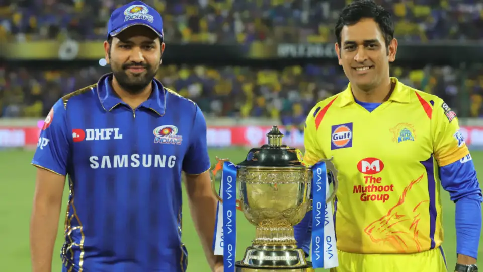
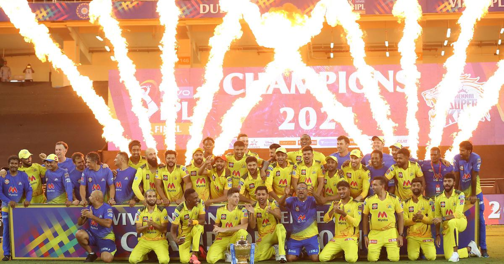
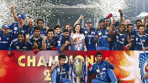
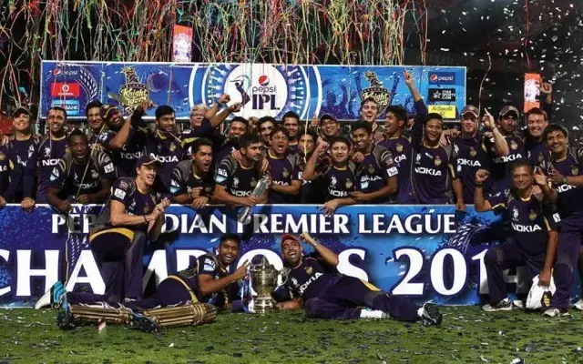

❀__________❀__________❀___________❀__________❀__________❀
Welcome to IPL Mania! Dive into the exhilarating world of cricket with our premier destination dedicated to
the Indian Premier League (IPL). Whether you're a die-hard fan or a casual observer, IPL Mania is your one-stop
hub for all things at IPL.
From thrilling match summaries to in-depth team analyses, we bring you the latest updates, insights, and stats
straight from the cricketing arena. Explore player profiles, relive unforgettable moments, and stay ahead of
the game with our comprehensive coverage.
Join us as we celebrate the spirit of cricket, where every match is a spectacle and every boundary is a moment
of glory. Let IPL Mania be your guide to the electrifying action, drama, and excitement that define the world's
most prestigious T20 league. Get ready to experience cricket like never before!
★ Where do you want to jump in today?...Confused, let's explore with options:
🤔 Wanna look upon your favourite teams of IPL...don't worry, we have got you covered here!

Chennai Super Kings

Dhoni's Dynasty: CSK's Triumphs in the IPL Saga!
Step into the illustrious realm of Chennai Super Kings (CSK), where cricketingexcellence is not just a tradition
but a way of life. Led by the iconic Mahendra Singh Dhoni, CSK stands tall as a beacon of dominance in the
Indian Premier League (IPL), adorned with five glittering trophies.
Since its inception, CSK has been synonymous with unwavering dominance, with each season a testament to their
indomitable spirit. From thrilling last-ball victories to strategic masterclasses, CSK's journey to greatness is
paved with memorable moments etched in the hearts of fans worldwide.
At the helm of this cricketing juggernaut is the enigmatic Dhoni, whose leadership transcends boundaries. His calm
demeanor, astute tactical acumen, and unparalleled leadership have guided CSK through the highs and lows of the IPL,
forging a legacy that will stand the test of time.
But Dhoni is not alone in this quest for glory. Alongside him stand a roster of cricketing virtuosos, each
contributing their brilliance to CSK's dominance. From the explosive batting of Suresh Raina to the spin wizardry
of Ravindra Jadeja, and the searing pace of Deepak Chahar to the power-hitting prowess of Faf du Plessis, CSK boasts
a lineup that strikes fear into the hearts of their opponents.
As we relive the glory of CSK's triumphs in 2010, 2011, 2018, 2021, and 2023, we celebrate not just the victories,
but the unwavering spirit and camaraderie that define this legendary team. Join us as we pay homage to Dhoni's Dynasty,
where every match is a spectacle, and every victory a testament to CSK's unyielding pursuit of excellence!
Recordbook of CSK:
Match Played
228
Match Won
133
Match Lost
092
No-Result/Tie
003
Trophies
005
Mumbai Indians

Mumbai Indians: Masters of the IPL Universe!
Welcome to the illustrious world of Mumbai Indians, where cricketing excellence knows no bounds, and victory is simply
a way of life. Join us as we embark on a journey through the annals of the Indian Premier League (IPL), celebrating
the unparalleled dominance of the most successful franchise in IPL history.
Led by the astute leadership of Rohit Sharma, Mumbai Indians stand tall as a towering force in the realm of T20 cricket,
adorned with a remarkable collection of five IPL trophies.
Since their inception, Mumbai Indians have redefined the standards of excellence, setting benchmarks that few can match.
With a perfect blend of seasoned veterans and emerging talents, the MI squad boasts a lineup that strikes fear into the
hearts of their opponents. From the explosive batting of Rohit Sharma and Quinton de Kock to the lethal bowling duo of
Jasprit Bumrah and Trent Boult, Mumbai Indians are a formidable force to reckon with on any given day.
But it's not just about individual brilliance; it's about the collective spirit that binds the team together. The Mumbai
Indians' ethos of resilience, determination, and unwavering belief has propelled them to the summit of IPL glory time and
time again.
As we reminisce about their triumphant campaigns in 2013, 2015, 2017, 2019, and 2020, we celebrate the relentless pursuit
of excellence that defines Mumbai Indians. Join us as we pay homage to their legacy, where every match is a spectacle, and
every victory a testament to their unmatched supremacy in the IPL universe!
Recordbook of MI:
Match Played
250
Match Won
138
Match Lost
108
No-Result/Tie
002
Trophies
005
Kolkata Knight Riders

Knights of Glory: Kolkata Knight Riders in the IPL Arena!
Step into the electrifying realm of Kolkata Knight Riders (KKR), where the spirit of cricket meets the thrill of
victory. Join us on a journey through the captivating saga of one of the most dynamic franchises in the Indian
Premier League (IPL).
Under the visionary leadership of the Shah Rukh Khan-owned franchise, Kolkata Knight Riders have carved their
niche as formidable contenders, leaving an indelible mark on the cricketing landscape.
Led by inspirational captains such as Gautam Gambhir and Dinesh Karthik, KKR has showcased an unwavering commitment
to excellence, backed by a roster of talented players who exemplify grit, skill, and determination.
From the explosive batting of Andre Russell to the crafty spin of Sunil Narine, and the elegant strokeplay of Shubman.
Gill to the fiery pace of Pat Cummins, KKR boasts a lineup that embodies the ethos of fearlessness and flair.
As we reflect on their triumphant campaigns in 2012 and 2014, we celebrate the resilience and camaraderie that define
Kolkata Knight Riders. With each match, they defy the odds, igniting the passion of millions of fans across the globe.
Join us as we salute the Knights of Glory, where every match is a spectacle, and every victory a testament to the
unwavering spirit of KKR in the grand arena of the IPL!
 ❀ CHENNAI's COMBATS
❀ MUMBAI'S MEETUPS
❀ KOLKATA'S KNOCKS
❀ BENGALURU'S BATTLES
❀ RAJASTHAN'S RIVALIRIES
❀ GUJARAT'S GAMES
✥ FOR OTHER TEAMS CLICK ME :)
❀ CHENNAI's COMBATS
❀ MUMBAI'S MEETUPS
❀ KOLKATA'S KNOCKS
❀ BENGALURU'S BATTLES
❀ RAJASTHAN'S RIVALIRIES
❀ GUJARAT'S GAMES
✥ FOR OTHER TEAMS CLICK ME :)